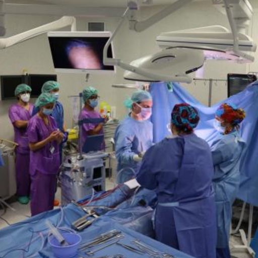

Bellvitge es un barrio del Hospitalet de Llobregat, en el área metropolitana de Barcelona, España. Está clasificado territorialmente dentro del Distrito VI, juntamente con el Gornal.
El Hospital de Bellvitge ha sido el centro que ha realizado más trasplantes de órganos de adulto en Catalunya en 2021
